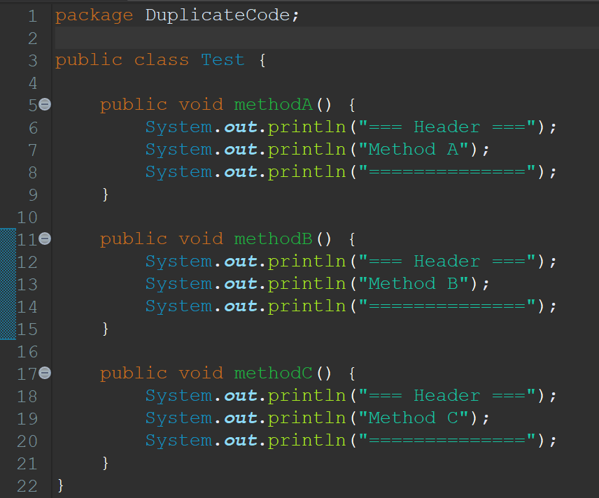
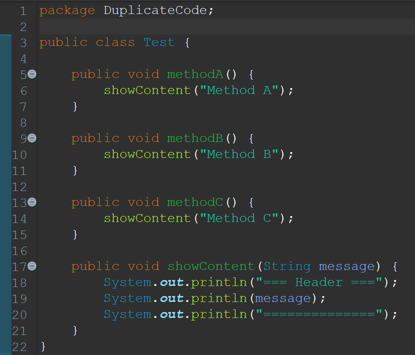

Duplicate Code
Definisi
Duplicate Code adalah sebuah code smell yang terjadi ketika terdapat beberapa bagian code berbeda yang sama atau mirip.
Contoh
Before
Code:
Test.java
Alasan:
Class 'Test' berisi beberapa method yang memiliki baris kode yang duplikat yakni method 'methodA()', 'methodB()', dan 'methodC()'.
After
Code:
Test.java
Hasil Perbaikan:
Maka dari itu, kita dapat menggunakan teknik 'Extract Method' untuk membuat method baru yang bernama 'showContent()' untuk mengatasi duplikasi kode yang berfungsi untuk mencetak isi content dari 'methodA()', 'methodB()', dan 'methodC()'.